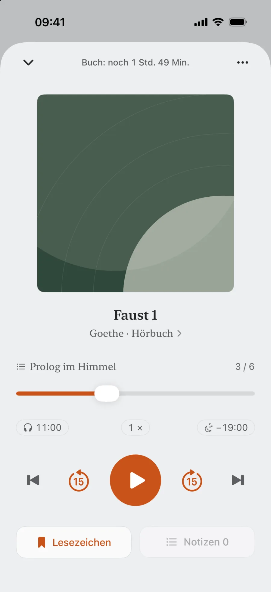

EarMemo › BookPlayer-Alternative mit Notizen
Du suchst eine BookPlayer-Alternative, die Notizen kann? Ein ehrlicher Vergleich
Wenn BookPlayer für dich funktioniert, bleib dabei. Er ist kostenlos und Open Source, hat CarPlay, eine Apple-Watch-App und Smart Rewind und kann schon jetzt eine Notiz an ein Lesezeichen hängen und die Notizen als Textdatei exportieren.
EarMemo ist die Alternative, wenn es dir um die Notizen geht: Drück auf deine AirPods, um die Stelle zu markieren, ohne das iPhone herauszuholen (die Marke sitzt zwei Sekunden früher), und hör einfach weiter. Jede Notiz steht unter ihrem Kapitel und als Marke auf der Fortschrittsleiste, und der Markdown-Export enthält Kapitel- und Gesamtzeit. Kein Konto, kein App-Server, keine Analyse. Dafür gibt es kein CarPlay, keine Watch-App und kein Smart Rewind, und die Gratisversion hat Grenzen; Pro ist ein Einmalkauf.
Im direkten Vergleich
Im App Store ist BookPlayer bei Version 6.0.1, EarMemo bei 1.8. Beide spielen DRM-freie M4B- und MP3-Dateien mit Kapiteln, merken sich die Stelle pro Buch und haben Sleep-Timer, Tempo, Sperrbildschirm-Steuerung und Siri. Die Tabelle zeigt, was danach noch übrig bleibt.
| BookPlayer | EarMemo | |
|---|---|---|
| Preis | Kostenlos. Cloud-Sync mit dem Abo BookPlayer Pro: 5,49 € im Monat oder 59,99 € im Jahr | Kostenlos mit Grenzen: 1 Album gleichzeitig, 10 Titel, Text an 5 Notizen. EarMemo Pro: einmalig 8,99 € |
| Notiz an einem Lesezeichen | Ja: nach dem Lesezeichen „Notiz hinzufügen“, oder per Siri | Ja: jede Marke kann Text tragen, geschrieben bei laufender Wiedergabe |
| Lesezeichen per Kopfhörertaste | Nein: Weiter/Zurück am Kopfhörer springen vor und zurück | Ja, nach Einrichtung: Weiter oder Zurück wird zu „Lesezeichen“, mit kurzem Ton |
| Wo die Marke sitzt | Auf der aktuellen Sekunde | Zwei Sekunden vor dem Tastendruck; ±2 s verschiebbar |
| Notizen in Büchern mit Kapiteln | Eine Lesezeichenliste pro Buch | Unter ihrem Kapitel gruppiert und als Marken auf der Fortschrittsleiste |
| Notizen exportieren | Text (.txt) mit Kapitel und Zeit im Kapitel. Kostenlos | Markdown (.md): eine Notiz, ein Buch oder ein ganzes Album, mit Kapitel- und Gesamtzeit. Pro |
| CarPlay | Ja | Nein |
| Apple Watch | Ja; Wiedergabe ohne iPhone nutzt Cloud-Sync | Nein |
| Smart Rewind nach einer Pause | Ja | Nein |
| Sync zwischen Geräten | Cloud-Sync, mit Pro | Nein. Die Daten sind Teil deines eigenen iCloud-Backups |
| Streaming von Jellyfin oder Audiobookshelf | Ja | Nein. Spielt Dateien auf dem Gerät ab |
| WLAN-Übertragung aus dem Browser am Computer | Ja | Ja |
| Konto | Optional, mit „Mit Apple anmelden“ | Keins |
| Erfasste Daten | Absturz- und Leistungsdaten (Sentry). App-Store-Angabe: Nicht mit dir verknüpfte Daten | Keine. App-Store-Angabe: Keine Daten erfasst |
| Open Source | Ja, GPL-3.0 | Nein |
| Aktuelle Version braucht | iOS 26 | iOS 17 |
Quellen: BookPlayer im App Store, seine Datenschutzerklärung und sein Quellcode auf GitHub.
Was BookPlayer schon kann
Wenn du BookPlayer verlassen willst, weil du glaubst, er könne keine Notizen, schau noch einmal hin. Nach einem Lesezeichen bietet BookPlayer „Notiz hinzufügen“ an; seine Siri-Aktion fragt laut nach einer Notiz; und die Lesezeichenliste lässt sich als .txt-Datei teilen, jede Notiz unter ihrem Kapitel. Seit 6.0 nimmt er auch Dateien aus dem Browser am Computer per WLAN an. Nichts davon ist ein Grund zu wechseln.
Die Gründe zu wechseln sind enger, und alle drehen sich darum, wie die Notizen ins Zuhören passen.
Wo EarMemo anders ist
- Markieren, ohne das iPhone herauszuholen. Stell unter Einstellungen → Kopfhörersteuerung einmal „Weiter“ auf „Lesezeichen“; dann markiert zweimaliges Drücken auf den AirPods Pro die aktuelle Sekunde mit einem kurzen Ton, und das Buch läuft weiter. Andere Kopfhörer nutzen die Taste, die „Weiter“ oder „Zurück“ sendet; Lenkradtasten im Auto folgen derselben Einstellung. In BookPlayer springen dieselben Tasten.
- Die Marke sitzt am Satzanfang. Man reagiert immer einen Moment zu spät, darum setzt EarMemo die Marke zwei Sekunden vor den Tastendruck; danach kannst du sie um ±2 Sekunden verschieben.
- Notizen leben im Buch. In einer M4B mit Kapiteln steht jede Notiz unter ihrem Kapitel, Kapitel ohne Notizen werden zu einer Zeile zusammengefaltet. Jede Notiz ist eine orangefarbene Marke auf der Fortschrittsleiste; ein Tipp darauf zeigt ihren Titel.
- Nachhören, dann weiter. Tipp auf eine Notiz, um die Stelle noch einmal zu hören; schließt du die Notizen, bist du wieder dort, wo du warst.
- Markdown statt Textwüste. Der Pro-Export schreibt Überschriften sowie die Zeit im Kapitel und im ganzen Buch, bereit für Obsidian oder jeden Markdown-Editor — siehe einen Beispielexport.
- Nichts zum Anmelden, nichts wird erfasst. Kein Konto, kein App-Server, keine Analyse, keine Absturzberichte. Wie du das von außen prüfst, steht unter Sendet EarMemo meine Daten?

Deine Bücher aus BookPlayer mitnehmen
- Dateien finden. Die Bücher, die BookPlayer auf dem Gerät hat, liegen in der Dateien-App unter Auf meinem iPhone › BookPlayer.
- In EarMemo importieren. Wähle in EarMemo „Ordner importieren“ und dort den Ordner des Buchs; ein Ordner kommt als ein Album an, in der richtigen Reihenfolge. Oder zieh die Dateien per WLAN-Übertragung vom Computer herein.
- Jedes Buch an deiner Stelle beginnen. Wiedergabepositionen und Lesezeichen bleiben in BookPlayer; EarMemo kann sie nicht lesen. Spring einmal an deine Stelle, danach merkt EarMemo sie sich.
Du musst dich nicht entscheiden. Beide lesen dieselben DRM-freien Dateien, also nutzen viele BookPlayer im Auto und EarMemo für die Bücher, zu denen sie Notizen machen wollen.
Andere Alternativen
Wenn es dir nicht um Notizen geht, ist EarMemo wahrscheinlich nicht die Antwort. Bound (kostenpflichtig) importiert aus Dropbox und OneDrive und hat CarPlay. Wie man einen Player nach dem einen Punkt auswählt, der zählt, steht unter M4B- und MP3-Hörbücher auf dem iPhone hören; die Notizmethode selbst unter Gehörtes aus Hörbüchern behalten.
Wann EarMemo nicht die richtige Wahl ist
- Du hörst im Auto mit CarPlay oder auf der Apple Watch. EarMemo hat beides nicht. Bleib bei BookPlayer.
- Du willst deine Bibliothek zwischen Geräten synchronisieren oder von Audiobookshelf oder Jellyfin streamen. EarMemo spielt bewusst nur Dateien auf dem Gerät.
- Du willst alles kostenlos und ohne Grenzen. Der Player von BookPlayer ist kostenlos. Die Gratisversion von EarMemo spielt ein Album gleichzeitig und erlaubt Text an fünf Notizen.
- Du brauchst Smart Rewind. EarMemo spult nach einer Pause nicht automatisch zurück.
- Deine Bücher stammen von Audible oder Apple Books. Sie sind DRM-geschützt; keine der beiden Apps öffnet sie.
Häufige Fragen
Welche BookPlayer-Alternative eignet sich für Notizen zu Hörbüchern?
EarMemo, wenn Notizen der Grund für den Wechsel sind. Du markierst eine Stelle per Druck auf die AirPods, ohne das iPhone herauszuholen, schreibst, während das Buch weiterläuft, siehst die Notizen nach Kapiteln gruppiert und auf der Fortschrittsleiste und exportierst sie als Markdown mit Kapitel- und Gesamtzeit (Pro). Brauchst du CarPlay, eine Apple-Watch-App oder Cloud-Sync, bleib bei BookPlayer.
Kann BookPlayer Notizen an Lesezeichen hängen?
Ja. Nach einem Lesezeichen bietet BookPlayer „Notiz hinzufügen“ an, seine Siri-Aktion fragt nach einer Notiz, und die Lesezeichenliste lässt sich als .txt-Datei teilen, mit jeder Notiz samt Kapitel und Zeit.
Kann ich in BookPlayer mit den AirPods ein Lesezeichen setzen?
Nicht mit den Kopfhörertasten: In BookPlayer springen Weiter und Zurück am Kopfhörer vor und zurück. Lesezeichen setzt du im Player, per Siri oder Kurzbefehl oder über CarPlay. In EarMemo kannst du Weiter oder Zurück auf „Lesezeichen“ stellen, dann markiert ein Druck auf die AirPods die Stelle mit einem Ton.
Kann ich Bibliothek und Lesezeichen von BookPlayer zu EarMemo mitnehmen?
Die Audiodateien ja: BookPlayer legt sie in der Dateien-App unter Auf meinem iPhone › BookPlayer ab, und EarMemo importiert Ordner von dort. Wiedergabepositionen und Lesezeichen lassen sich nicht übernehmen; EarMemo kann die Datenbank von BookPlayer nicht lesen.
Ist EarMemo kostenlos wie BookPlayer?
Nicht ganz. EarMemo ist gratis zu laden, mit einer dauerhaften Gratisversion: ein Album gleichzeitig, bis zu 10 Titel, unbegrenzt Marken und Text an fünf davon. EarMemo Pro kostet im deutschen App Store einmalig 8,99 €, ohne Abo. Der Player von BookPlayer ist kostenlos; sein Pro-Abo ergänzt Cloud-Sync.
Hat EarMemo CarPlay oder eine Apple-Watch-App?
Nein, beides nicht. Wenn du vor allem im Auto oder mit der Uhr hörst, ist BookPlayer die bessere Wahl.
Was ist datenschutzfreundlicher, BookPlayer oder EarMemo?
EarMemo erfasst nichts: kein Konto, kein App-Server, keine Analyse, keine Absturzberichte, und die App-Store-Angabe lautet „Keine Daten erfasst“. BookPlayer erfasst laut seiner Datenschutzerklärung bei allen Nutzern Absturz- und Leistungsdaten über Sentry; wer sich anmeldet und Pro abonniert, dessen Bibliothek, Fortschritt und Lesezeichen werden für den Sync auf seinen Servern gespeichert.
Mit deinen eigenen Dateien ausprobieren
EarMemo ist kostenlos und innerhalb des Gratis-Kontingents dauerhaft nutzbar. Mit einem einmaligen Kauf schaltest du EarMemo Pro frei. Kein Abo, keine Werbung, kein Konto.